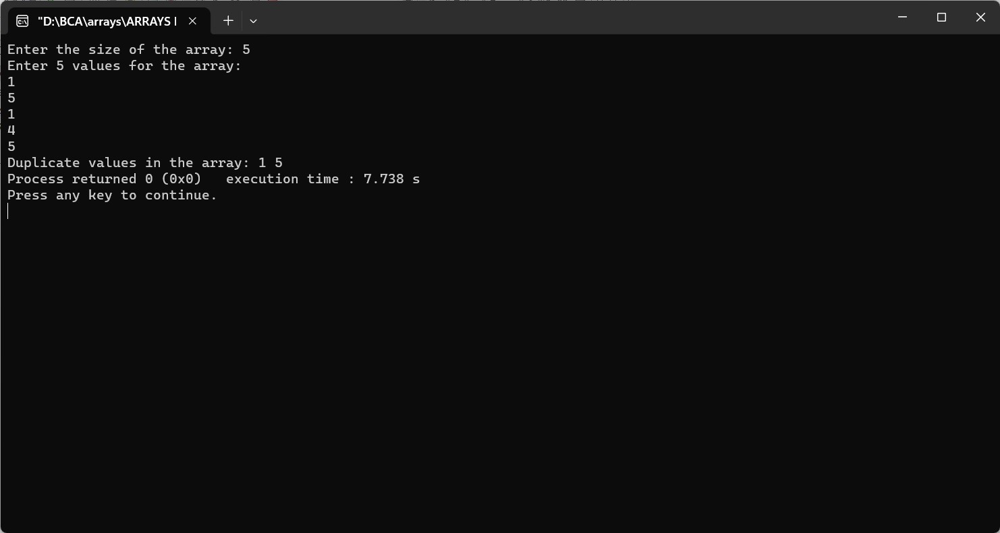

Enter an array from user and find the duplicate values
#include
int main() {
int size;
printf("Enter the size of the array: ");
scanf("%d", &size);
int arr[size];
printf("Enter %d values for the array:\n", size);
for (int i = 0; i < size; i++) {
scanf("%d", &arr[i]);
}
printf("Duplicate values in the array: ");
for (int i = 0; i < size; i++) {
for (int j = i + 1; j < size; j++) {
if (arr[i] == arr[j]) {
printf("%d ", arr[i]);
break; // To avoid printing the same duplicate multiple times
}
}
}
return 0;
}
